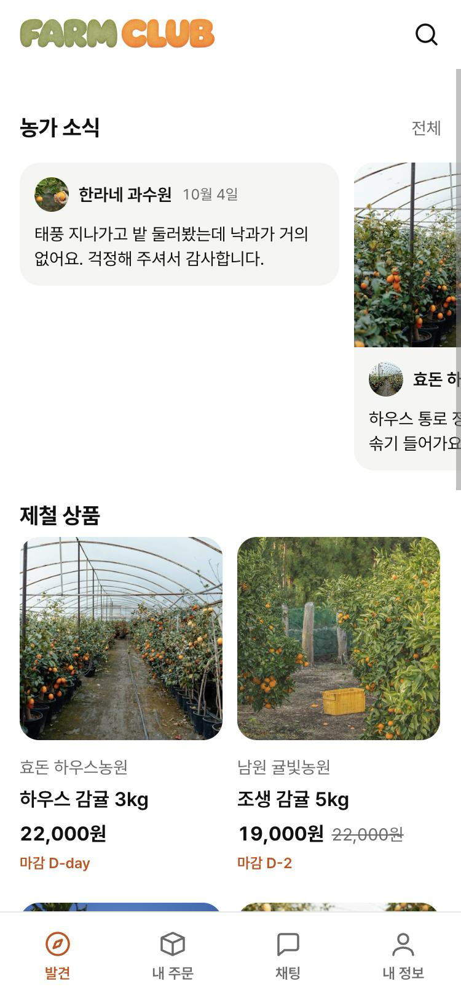
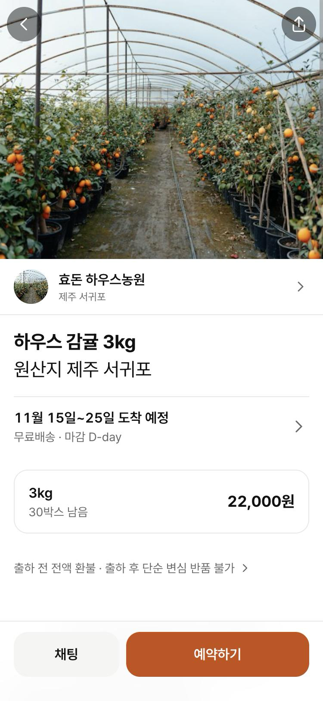
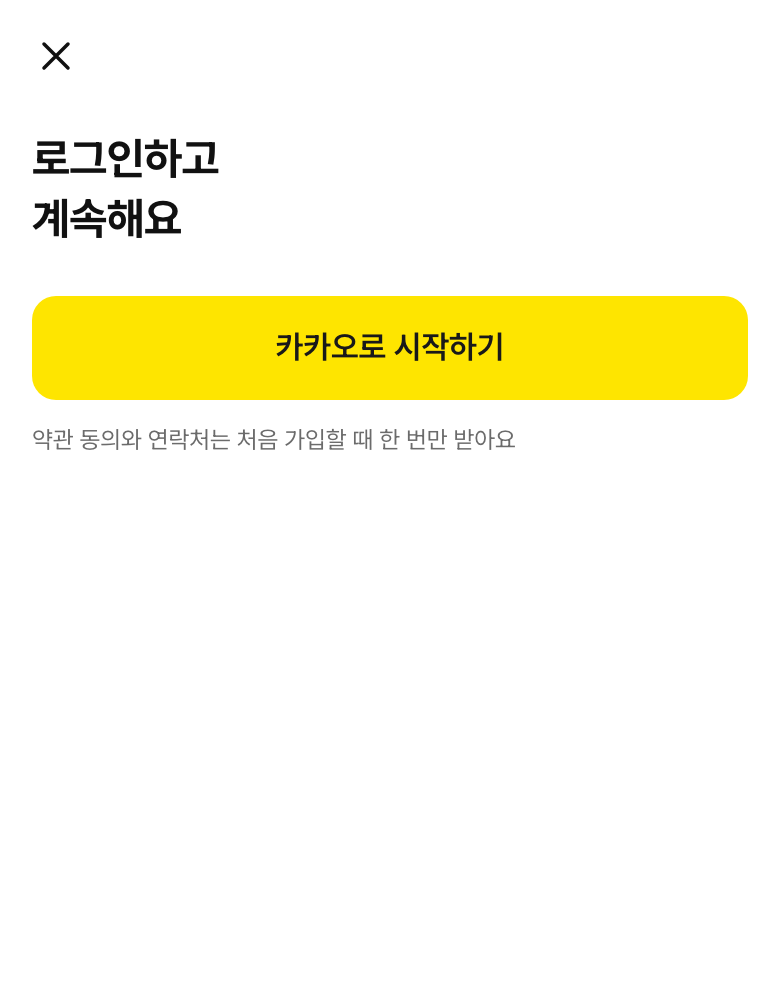
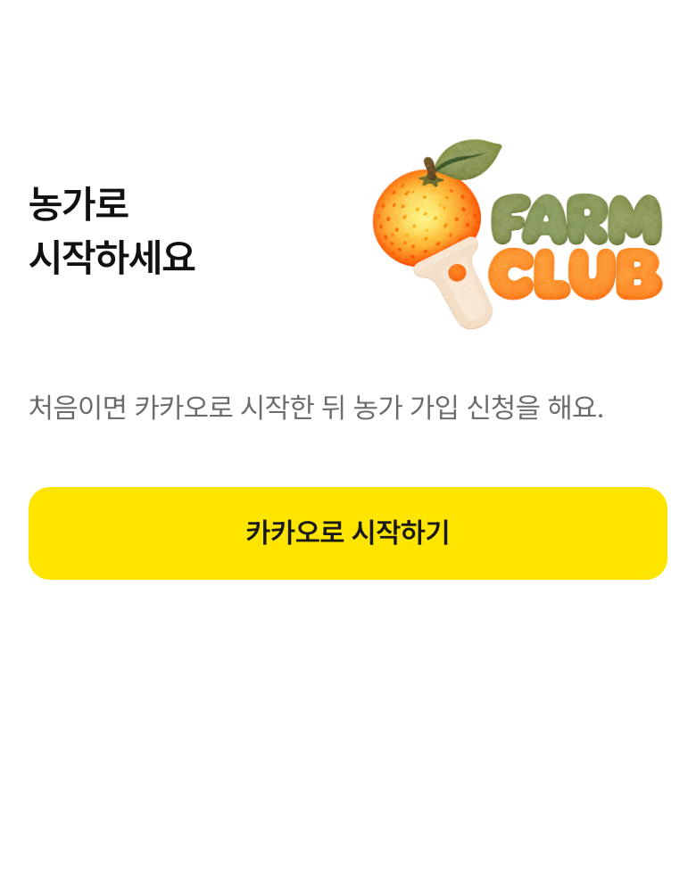
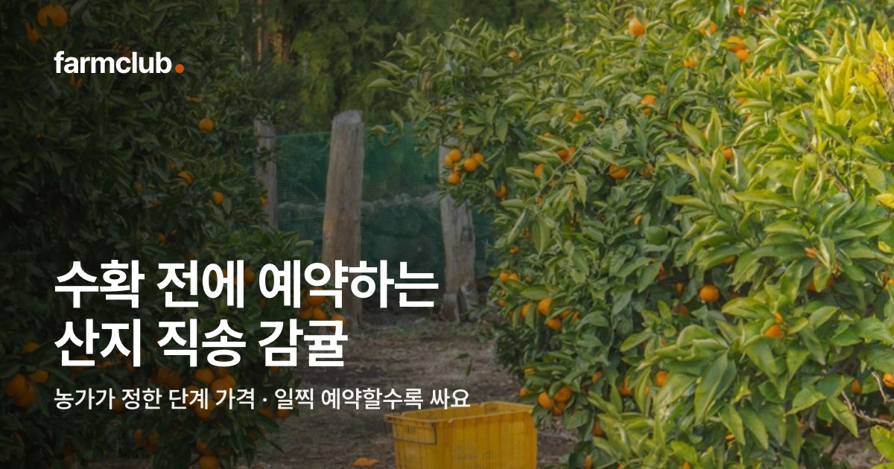
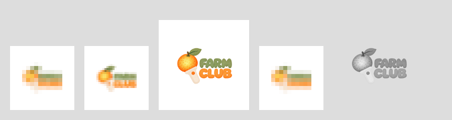

234소비자 홈 상단
글자형 로고 130px. 로고 주황(#FB8F27)과 ‘마감 D-day’·탭 주황(#C94F0C)이 한 화면에 같이 있어요.
펠트 질감 로고(10월 19일 승인, 11월 9일 아이콘 적용)는 따뜻하고 손에 잡히는 쪽이고, 앱 화면은 Pretendard·무채색·주황 한 점의 절제된 쪽이며, 카카오톡 공유 미리보기는 로고 승인 전의 소문자 워드마크를 그대로 쓰고 있어요. 각각은 잘 만든 결과지만 한 사람이 링크 → 홈 → 상품 → 로그인 → 홈 화면 아이콘 순서로 만나면 세 회사를 차례로 보는 셈이에요.

234글자형 로고 130px. 로고 주황(#FB8F27)과 ‘마감 D-day’·탭 주황(#C94F0C)이 한 화면에 같이 있어요.

13브랜드 요소 없음. 첫 사진은 하우스 통로 풍경이고, 농가 사람·손은 보이지 않아요.

10로고가 없어요. 카카오 노란 버튼이 화면에서 가장 큰 색이에요.

10두 줄 조합형 172×129(DEV-85 승인 배치). 같은 서비스의 두 로그인이 다르게 시작해요.

5710월 8일 만든 소문자 ‘farmclub.’ 워드마크. 생산자 앱도 이 이미지를 써서 농가에게 ‘일찍 예약할수록 싸요’가 보여요. 6

891116·32는 8배·4배로 키워 보였어요. 두 줄 조합형 전체가 정사각 안 64% 폭으로 들어가 글자가 색 띠가 돼요.
| 무엇이 어긋나나 | 어디서 봤나 | 신뢰·첫인상에 걸리는 이유 | 확인 | |
|---|---|---|---|---|
| 1 | 이름 표기 셋: 그림 속 ‘FARM CLUB’(대문자, 띄어 씀), 메타·채팅 상대·푸터의 ‘farmclub’, 로고 대체 텍스트·관리자 alt의 ‘Farmclub’ | BrandLogo.tsx accessibilityLabel, admin.js, public/index.html, ChatBubble.tsx | 검색·화면 읽기·카톡 미리보기마다 이름 모양이 달라 같은 서비스인지 한 번 더 확인하게 돼요. | 검증 |
| 2 | 주황 둘: 로고 CLUB 평균 #FB8F27, UI 강조 #C94F0C | 홈 헤더 로고와 ‘마감 D-day’·발견 탭이 한 화면 | 비슷하지만 다른 주황은 의도로 읽히지 않고 인쇄가 어긋난 것처럼 보여요. | 검증 픽셀 평균 |
| 3 | 로고 글자 대비: FARM 2.78:1, CLUB 2.32:1 (흰 바탕) | 홈 헤더 130px, 펠트 결이 글자 가장자리를 흐림 | WCAG는 로고를 대비 기준에서 빼지만, 화면에서 가장 먼저 읽히는 글자가 가장 흐린 글자예요. | 검증 수치 |
| 4 | 재료가 다름: 로고는 펠트·종이 질감 그림, 화면은 그림자 없는 평면·1px 선 | 모든 로고 자리 | 로고만 다른 앱에서 가져온 스티커처럼 떠 보여요. 따뜻함이 로고 안에만 머물러요. | 검증 관찰 |
| 5 | 공유 미리보기가 옛 워드마크: 소문자 ‘farmclub.’ + 주황 점, 어둡게 깐 과수원 사진 | apps/*/public/og.jpg (2026-10-08), 로고 승인(10-19) 전 | 카톡으로 받은 링크와 열어 본 앱의 로고가 달라 첫 접점부터 갈라져요. | 검증 |
| 6 | 생산자 공유 미리보기 = 소비자 이미지(파일 해시 같음). og:title은 ‘farmclub 농가 · 예약받는’인데 그림 문구는 ‘일찍 예약할수록 싸요’ | apps/producer/public/og.jpg | 농가에게 보내는 가입 링크가 소비자 광고처럼 보여요. | 검증 |
| 7 | 같은 개념 두 이름: 그림 ‘단계 가격’, 메타 설명 ‘시기별 가격’ | og.jpg 부제, index.html description·manifest | 핵심 약속(일찍 사면 싸다)의 이름이 접점마다 달라요. | 검증 |
| 8 | 파비콘·홈 화면 아이콘이 두 줄 조합형 전체: 16px은 귤 점 + 색 띠 두 줄, 32px도 글자 판독 안 됨, 180px에서 글자 높이 약 17px | scripts/generate-brand-icons.mjs (폭 64%) | 탭·홈 화면은 매일 보는 자리인데 무엇인지 알아보기 어려워요. 정사각 위아래 약 30%가 빈 흰색이에요. | 검증 렌더 |
| 9 | 소비자·생산자 앱 아이콘이 같은 그림(icon.png 해시 같음, 웹 아이콘도 같은 원본·같은 배치) | 두 앱 assets/, public/icons/ | 농가가 두 앱을 다 홈 화면에 두면 어느 쪽인지 이름 글자로만 구별해요. | 검증 |
| 10 | 로그인 비대칭: 생산자는 조합형 로고 172×129, 소비자는 로고 없음 | apps/*/src/app/login.tsx, 캡처 | 소비자는 가입 직전, 카카오 노란 화면으로 넘어가기 바로 앞에서 브랜드를 못 봐요. | 검증 |
| 11 | 안드로이드 적응형 아이콘 backgroundColor가 Expo 템플릿 기본값 #E6F4FE(하늘색). 단색 레이어는 회색조 그림이라 테마 아이콘에서 글자까지 한 덩어리 실루엣이 될 수 있음 | apps/*/app.json, android-icon-monochrome.png | 배경 PNG가 흰색이라 대부분 가려지지만, 테마 아이콘을 켠 기기에서 모양이 뭉개질 수 있어요. | 검증 설정값 · 추정 기기 표시 |
| 12 | 브라우저 테마색·매니페스트 배경 모두 #FFFFFF. 홈 화면에서 켤 때 흰 바탕 + 작은 조합형(아이콘 512 기반 자동 스플래시) | manifest.webmanifest, index.html theme-color | 앱을 여는 1초가 브랜드 없이 흰 화면이에요. | 검증 설정값 · 추정 기기별 스플래시 |
| 13 | 사진 쓰는 법 규칙 없음: 공유 카드는 어둡게 깐 과수원, 상품 첫 장은 하우스 통로 풍경, 소식 카드는 사진 있는 것·없는 것이 섞임 | 캡처(11-10), docs/design/README.md에 사진 규칙 없음 | ‘농가가 직접 판다’가 서비스의 차이인데, 첫 화면에서 농가 사람이 거의 안 보여요. | 검증 캡처 · 규칙 부재 |
| 14 | 사진이 없을 때 빈 자리에 회색조 로고 | packages/ui/src/content.tsx (monochrome) | 산지 증거가 있어야 할 자리를 브랜드가 대신 채워요. 작지만 13번과 같은 문제예요. | 검증 코드 |
관리자 페이지(scripts/admin-web)는 조합형 96×72 + ‘관리자’ 표시로 로고 쪽과 맞아 따로 짚지 않았어요(alt 표기만 1번). 푸터 문구 ‘farmclub은 통신판매중개자…’도 1번에 포함해요. 스플래시는 Expo 설정에 별도 이미지가 없어 12번(웹 설치형 기준)만 적었어요.
수치: 대비비는 WCAG 2.x 상대 휘도 공식, 로고 색은 logo-wordmark.png 불투명 픽셀 평균(왼쪽 절반 FARM, 오른쪽 절반 CLUB). 파일 같음은 md5 비교. ‘추정’은 실제 기기에서 확인하지 못한 항목이에요.